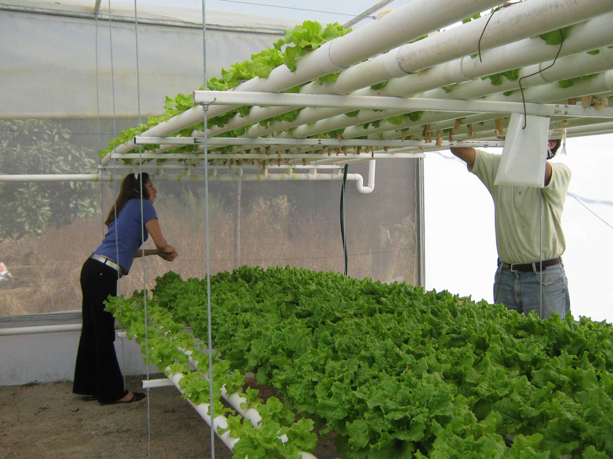
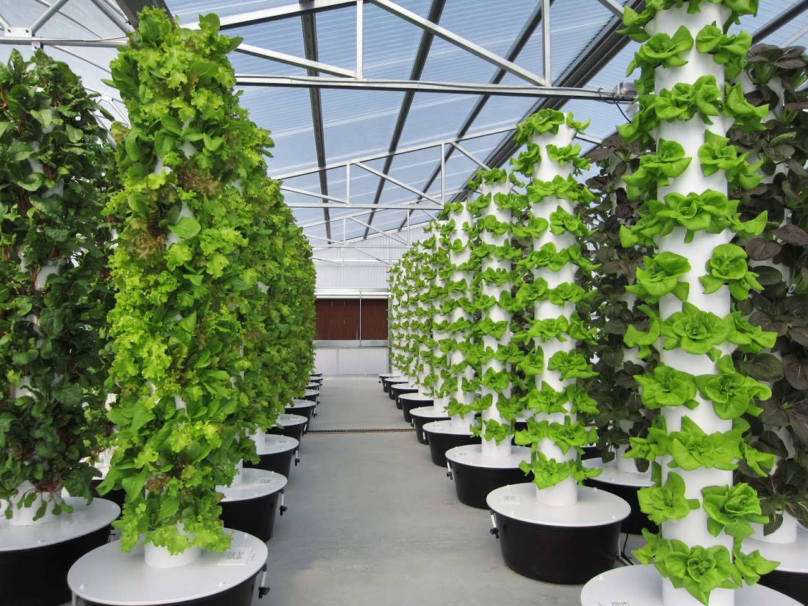
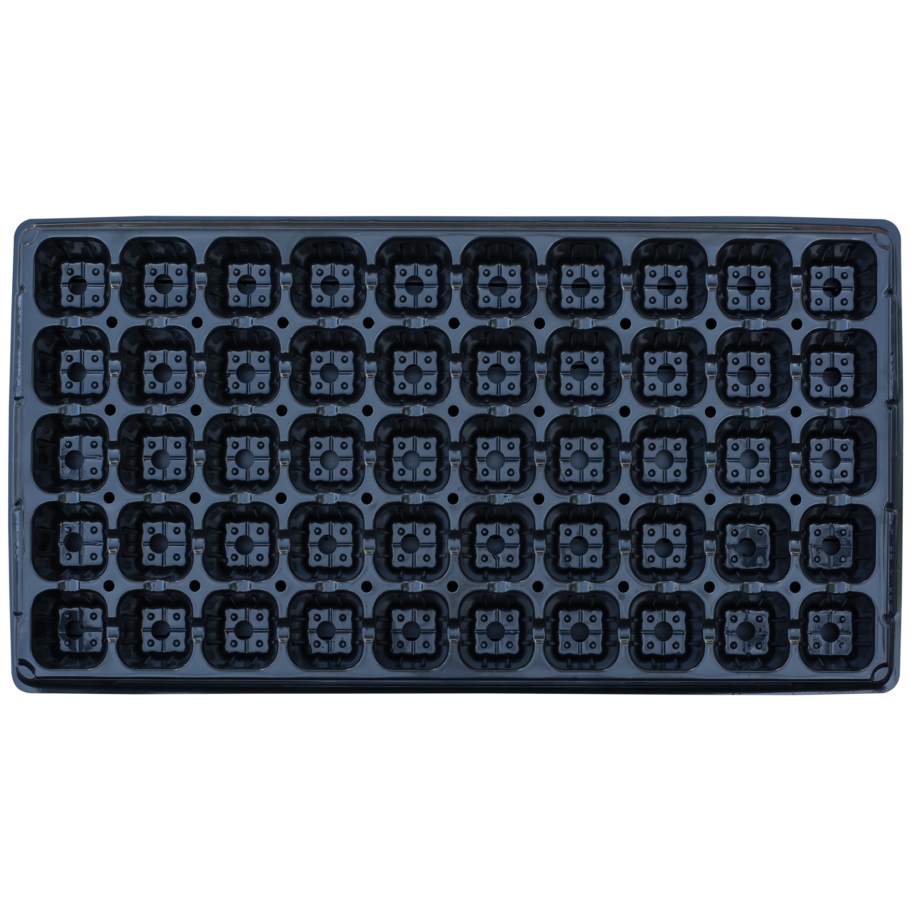
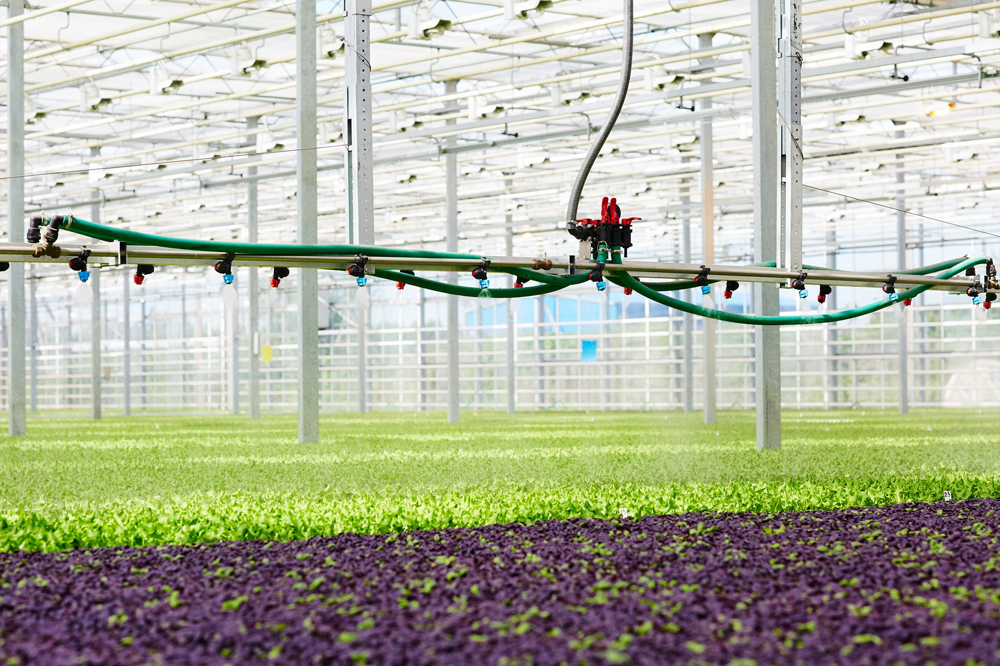
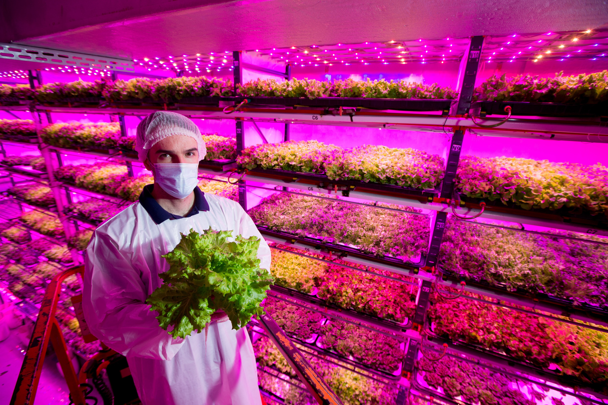
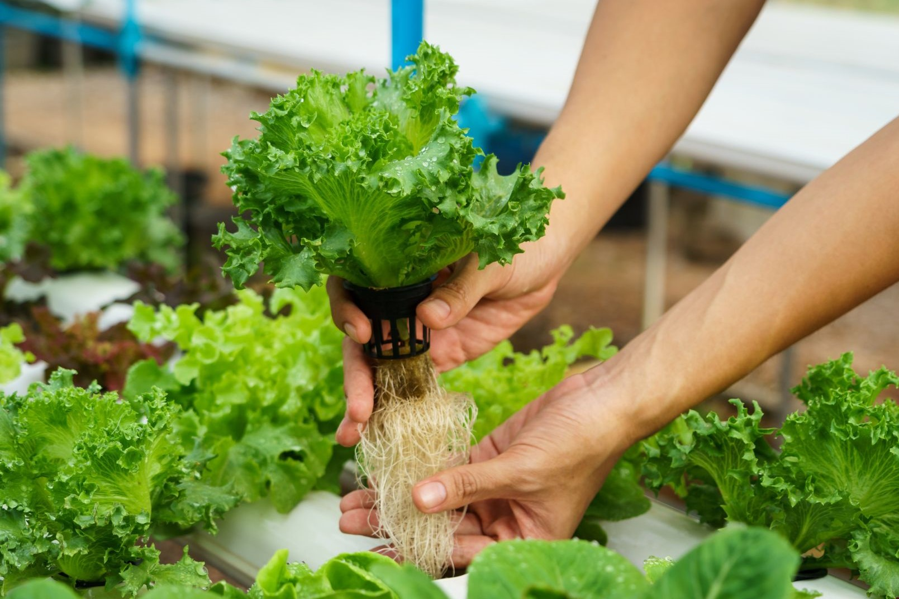

Proyecto Analisis y Modelado de Requerimientos
Nuestro negocio nació en Costa Rica, cuando una familia decidió transformar su patio trasero en
un pequeño espacio de cultivo sostenible. Lo que empezó como un proyecto para producir alimentos
más frescos y sanos para la casa se convirtió en una pasión compartida.
Al ver los resultados, vecinos y amigos comenzaron a pedirnos productos, y descubrimos que
podíamos aportar algo valioso a nuestra comunidad.
Así nació nuestra empresa familiar: cultivando con dedicación, amor por la tierra y el deseo de
ofrecer alimentos frescos, limpios y responsables para más hogares costarricenses.


Sistemas de cultivo sin suelo que usan nutrientes disueltos en agua para maximizar el crecimiento y eficiencia de tus plantas.

Torre vertical que permite cultivar múltiples plantas en poco espacio, ideal para hogares y espacios urbanos.

Bandejas especialmente diseñadas para germinación y crecimiento de plantas pequeñas, con control de nutrientes y agua.

Control automático de riego para mantener tus cultivos saludables sin intervención constante, optimizando el uso de agua.

Luces especiales que emiten espectros específicos para favorecer la fotosíntesis y el crecimiento de plantas en interiores.

Fórmulas especiales para el crecimiento óptimo de tus plantas, proporcionando todos los elementos esenciales en el agua.